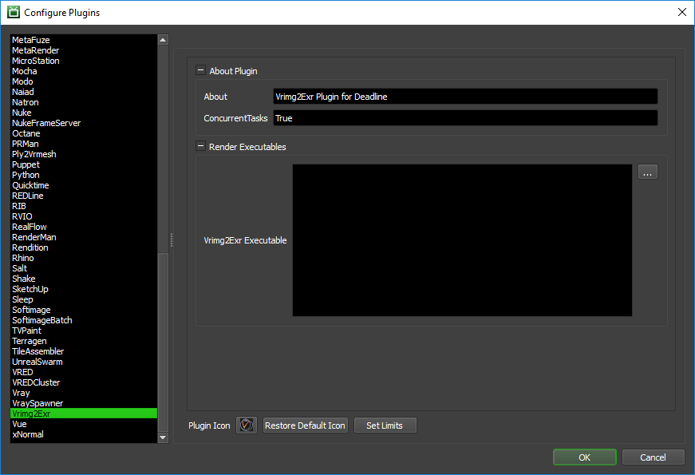

V-Ray Vrimg2Exr¶
Job Submission¶
You can submit Vrimg2Exr jobs from the Monitor. You can use the Submit menu, or you can use a job’s right-click Scripts menu to automatically populate some fields in the Vrimg2Exr submitter based on the job’s output.
Submission Options¶
The general Deadline options are explained in the Job Submission documentation. The Vrimg2Exr specific options are:
V-Ray Image File: The V-Ray Image file(s) to be converted. If you are submitting a sequence of files, you only need to select one vrimg file from the sequence.
Output File: Optionally override the output file name (do not specify padding). If left blank, the output name will be the same as the input name (with the exr extension).
Frame List: The list of frames convert.
Specify Channel: Enable this option to read the specified channel from the vrimg file and write it as the RGB channel in the output file.
Long Channel Names: Enable channel names with more than 31 characters. Produced .exr file will NOT be compatible with OpenEXR 1.x if a long channel name is present.
Set Gamma: Enable this option to apply the specified gamma correction to the RGB colors before writing to the exr file.
Crop EXR Data Window: Enable this option to auto-crop the EXR data window.
Set Buffer Size: Enable this option to set the maximum allocated buffer size per channel in megabytes. If the image does not fit into the max buffer size, it is converted in several passes.
Store EXR Data as 16-bit (Half): Enable this option to store the data in the .exr file as 16-bit floating point numbers instead of 32-bit floating point numbers.
Set Compression: Enable this option to set the compression type. The Zip method is used by default.
Separate Files: Writes each channel into a separate .exr file.
Threads: The number of computation threads. Specify 0 to use the number of processors available.
Multi Part: Writes each channel into a separate OpenEXR2 ‘part’.
Convert RGB Data to the sRGB Color Space: Enable this option to converts the RGB data from the vrimg file to the sRGB color space (instead of linear RGB space) before writing to the exr file.
Delete Input vrimg Files After Conversion: Enable this option to delete the input vrimg file after the conversion has finished.
Plugin Configuration¶
You can configure the Vrimg2Exr plugin settings from the Monitor. While in power user mode, select Tools -> Configure Plugins and select the Vrimg2Exr plugin from the list on the left.
Render Executables
Vrimg2Exr Executable: The path to the vrimg2exr.exe executable file used for rendering. Enter alternative paths on separate lines.
Error Messages and Meanings¶
This is a collection of known Vrimg2Exr error messages and their meanings, as well as possible solutions. We want to keep this list as up to date as possible, so if you run into an error message that isn’t listed here, please contact Deadline Support and let us know.
Currently, no error messages have been reported for this plugin.

{kind=link}
{kind=link}
{kind=link}